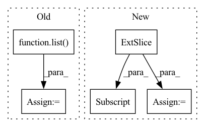

Pattern ID :30531

Before Change
target_width=target_width,
)
scales = torch.tensor(list(map(get_scales_func, list(bboxes))))
outputs_dict["scale_h"] = scales[:, 0]
outputs_dict["scale_w"] = scales[:, 1]
return outputs_dict
After Change
bboxes: torch.Tensor, target_height: float = 224.0, target_width: float = 224.0
) -> Dict[str, torch.Tensor]:
object_h = bboxes[:, 2] - bboxes[:, 0]
object_w = bboxes[:, 3] - bboxes[:, 1]
scale_h = target_height / object_h
scale_w = target_width / object_w
return {
In pattern: SUPERPATTERN
Frequency: 3
Non-data size: 5
Instances
Fragment ID: 90342784
Project Name: dsgoficial/pytorch_segmentation_models_trainer
Commit Name: 98aea36d167c498a7b4511a1c31541e5bbdf7234
Time: 2021-11-27
Author: philipeborba@gmail.com
File Name: pytorch_segmentation_models_trainer/utils/polygonrnn_utils.py
M Class Name: AnonimousClass
N Class Name: AnonimousClass
M Method Name: build_polygonrnn_extra_info_from_bboxes(3)
N Method Name: build_polygonrnn_extra_info_from_bboxes(3)
M Parent Class:
N Parent Class:
M File Name: pytorch_segmentation_models_trainer/utils/polygonrnn_utils.py
N File Name: pytorch_segmentation_models_trainer/utils/polygonrnn_utils.py
M Start Line: 577
M End Line: 592
N Start Line: 580
N End Line: 589
'>
Before Change
def extract_events(self, raw_edf):
// all events
events = np.array(
list(zip(raw_edf.info["gdf_events"][1], raw_edf.info["gdf_events"][2]))
)
// only trial onset events
trial_mask = [ev_code in [769, 770, 771, 772, 783] for ev_code in events[:, 1]]
trial_events = events[trial_mask]
assert len(trial_events) == 288, "Got {:d} markers".format(len(trial_events))
// event markers 769,770 -> 1,2
trial_events[:, 1] = trial_events[:, 1] - 768
// possibly overwrite with markers from labels file
if self.labels_filename is not None:
classes = loadmat(self.labels_filename)["classlabel"].squeeze()
trial_events[:, 1] = classes
unique_classes = np.unique(trial_events[:, 1])
assert np.array_equal(
[1, 2, 3, 4], unique_classes
), "Expect 1,2,3,4 as class labels, got {:s}".format(str(unique_classes))
// now also create 0-1 vector for rejected trials
trial_start_events = events[events[:, 1] == 768]
assert len(trial_start_events) == len(trial_events)
artifact_trial_mask = np.zeros(len(trial_events), dtype=np.uint8)
artifact_events = events[events[:, 1] == 1023]
for artifact_time in artifact_events[:, 0]:
i_trial = trial_start_events[:, 0].tolist().index(artifact_time)
artifact_trial_mask[i_trial] = 1
// mne expects events with 3 ints each:
events = np.zeros((len(trial_events), 3), dtype=np.int32)
events[:, 0] = trial_events[:, 0]
events[:, 2] = trial_events[:, 1]
return events, artifact_trial_mask
After Change
else:
trial_codes = [4] // "unknown" class
trial_mask = [ev_code in trial_codes for ev_code in events[:, 2]]
trial_events = events[trial_mask]
assert len(trial_events) == 288, "Got {:d} markers".format(
len(trial_events)
)
trial_events[:, 2] = trial_events[:, 2] - 3
// possibly overwrite with markers from labels file
if self.labels_filename is not None:
classes = loadmat(self.labels_filename)["classlabel"].squeeze()
'>
Fragment ID: 90342881
Project Name: braindecode/braindecode
Commit Name: b63192caeb41424761592609c8d426b7ec23890b
Time: 2019-05-22
Author: robintibor@gmail.com
File Name: braindecode/datasets/bcic_iv_2a.py
M Class Name: BCICompetition4Set2A
N Class Name: BCICompetition4Set2A
M Method Name: extract_events(2)
N Method Name: extract_events(2)
M Parent Class: object
N Parent Class: object
M File Name: braindecode/datasets/bcic_iv_2a.py
N File Name: braindecode/datasets/bcic_iv_2a.py
M Start Line: 43
M End Line: 75
N Start Line: 44
N End Line: 90
'>
Before Change
metric += sklearn_metrics.mean_squared_error(y_true_los, y_pred_los)
elif metrics_strategy == "MAPE":
metric += sklearn_metrics.mean_absolute_percentage_error(y_true_los, y_pred_los)
metric += np.mean(
np.abs(y_true_outcome - y_pred_outcome)
* max_visits
* np.array(list(map(lambda x: sigma_func(x), y_true_los)))
)
if verbose:
print("LOS Score:", metric)
After Change
for i in range(num_records):
cur_outcome_pred = y_pred_outcome[i]
cur_los_pred = y_pred_los[i]
cur_gt = y_true[i, :]
cur_outcome_true = cur_gt[0]
cur_los_true = cur_gt[1]
prediction_result = calculate_outcome_prediction_result(
cur_outcome_pred, cur_outcome_true
)
metric.append(
'>
Fragment ID: 90342910
Project Name: yhzhu99/covid-ehr-benchmarks
Commit Name: fc9fcafdeae37b009acb4acf87682f0d86306e69
Time: 2022-06-29
Author: yhzhu99@gmail.com
File Name: app/core/evaluation/covid_metrics.py
M Class Name: AnonimousClass
N Class Name: AnonimousClass
M Method Name: multitask_los_metric(6)
N Method Name: multitask_los_metric(7)
M Parent Class:
N Parent Class:
M File Name: app/core/evaluation/covid_metrics.py
N File Name: app/core/evaluation/covid_metrics.py
M Start Line: 83
M End Line: 116
N Start Line: 119
N End Line: 142